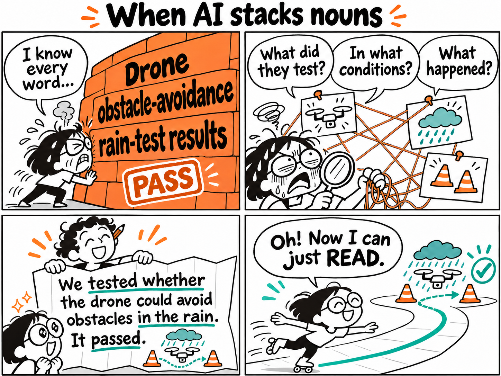

Reader First: Making technical writing easier to follow
A technical explanation can contain the right facts and still make the reader work to connect them. In AI-generated answers, I often encounter a condition that arrives after the claim it limits, a stack of nouns that leaves the action unclear, or a “this” with several possible references. I can usually recover the meaning, but I would rather spend that effort thinking about the answer.

Clark, Martin, and Mahowald’s study helped me think more precisely about this problem. They examine English features associated with processing difficulty, including long syntactic dependencies and stacked nouns. In chat and coding tasks in particular, many models used longer dependencies and more stacked nouns than versions of the same sentences translated into Japanese and back into English. The pattern varied by model, feature, and setting.
The study measures linguistic features and model preferences, rather than how well people understand the generated passages.
Thomas Hikaru Clark, Matias B. Martin, and Kyle Mahowald. Why is AI-generated language so hard to understand? arXiv:2610.29162v1, 2026.
The paper gave me a starting point for Reader First, a writing skill that asks an editor to look for relationships the reader has to reconstruct. If the writer knows how a condition limits a result, or what action a stack of nouns describes, the explanation can often state that relationship directly.
Spend words where they help the reader
A reader encounters an explanation one sentence at a time. Each new detail needs something to attach to. Naming the object before describing its behavior, or placing a condition beside the claim it limits, can make that connection easier to follow.
I chose this objective for Reader First: reduce the extra inference and rereading needed to recover the intended meaning. An edit should help the reader understand a particular relationship. Adding words is useful when those words do that work.
The example below comes from the skill and is translated into English. It illustrates an editing choice using a hypothetical test report.
Original
I added three concurrent-write cache-invalidation regression tests, all passing locally; production reliability under high load remains unverified.
Revised
I added three regression tests to check whether the cache is invalidated as expected during concurrent writes. All three tests passed locally. Reliability under high production load has not been verified.
The expanded version names the tests, then explains what they check. Concurrent writing becomes an explicit condition of the check. Repeating “three tests” ties the local result to those tests, and the final sentence states what remains unverified. The reader gets the same facts in an order that makes their relationships explicit.
The technical terms matter too. Cache invalidation means making a cached value unusable when appropriate. Replacing it with “cache failure” would change what the tests concern. The editor needs to preserve that distinction while making the sentence easier to follow.
Expansion needs the same care. A compressed phrase about timeouts, retries, and fallback may leave their order unspecified. Turning it into a story in which retries fail and a backup service takes over would add behavior the source never established. Before rearranging a sentence, the editor needs to identify the conditions, quantities, negation, evidence, and uncertainty that must survive the edit.
The paper’s controlled experiment makes the choice of objective concrete. In an event-to-sentence task, a token-length penalty shifted Qwen2.5-1.5B-Instruct toward shorter grammatical variants. That result is one reason I do not use output length as a proxy for a good edit.
Adapt the principle to Chinese
Chinese needs its own editing decisions. In the original phrase “三个并发写入场景下的缓存失效回归测试”, the reader encounters the number, operating condition, cache operation, and test category before reaching “测试”. The revision introduces the tests first, then explains what they check.
原句
我新增了三个并发写入场景下的缓存失效回归测试，本地全部通过；线上高负载情况下的可靠性尚未验证。
改写
我新增了三个回归测试，检查并发写入时缓存能否按预期失效。三个测试在本地都通过了；线上高负载下是否可靠，还没有验证。
The change concerns when the reader receives each piece of information. The same reasoning applies to references. If “这”, “其”, or “上述” could point to several objects, repeating the relevant noun may save the reader from looking back.
These Chinese editing rules are my practical extension of the paper’s motivation. Advice about an optional English that does not translate into a rule for adding or removing “的”. The editor has to find the difficulty in the sentence at hand. A long modifier may need to become a clause. An unclear pronoun may need a noun. A sentence that is already clear can stay as it is.
The intended reader matters too. Someone familiar with systems programming may need no explanation of “garbage collector”. Someone learning the mechanism may need a sentence about what it does. Reader First therefore sets no fixed sentence-length limit or target number of technical terms. It asks whether the reader has the information needed to follow the explanation. Splitting every sentence or replacing every paragraph with bullets can leave the reader with more fragments to reconnect.
Keep the claim intact
Technical explanations also need to preserve the state of the work. A proposed change, an edited file, a test that passed locally, and a deployed fix describe different things. Polishing the wording should leave those differences clear.
For a progress report, this means stating the supported result and keeping its scope nearby. “All three tests passed locally” tells the reader both what happened and where the result applies. The evidence that follows can then explain how the result was checked.
This is the editing habit I want Reader First to encourage. Find the relationship that takes effort to reconstruct, state it where the reader needs it, and check that the claim still means the same thing.